Rebuilt
WARHAMMER
The End Times
The Revolt of Mallobaude
An unofficial supplement
produced by the WarFo
An unofficial supplement
produced by the WarFo
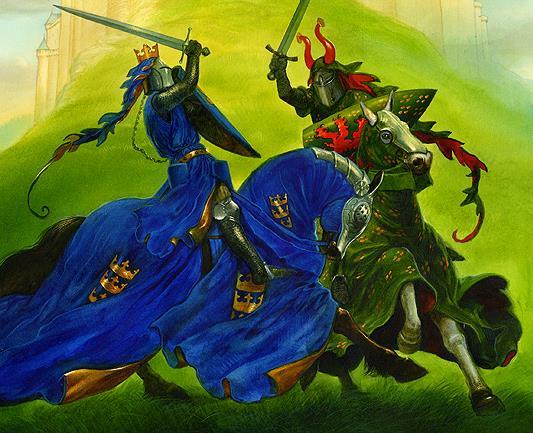
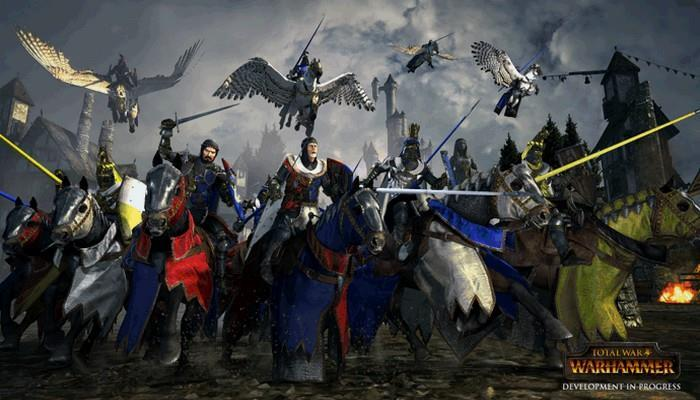
Prelude to the End Times
Part I - Game Guide
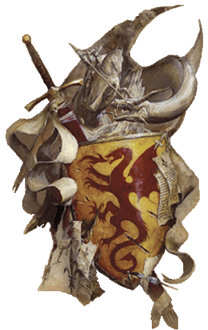
This unofficial supplement was created by members of the WarFo for the gaming community and fans of the Warhammer setting, without the authorisation of Games Workshop. Names and trademarks belonging to Games Workshop are used without authorisation for the purpose of expanding the game world. Unless otherwise stated, all illustrations are copyright or trademark Games Workshop. They are reproduced without authorisation solely to inspire hobbyists and players. If this causes a problem, please contact the authors so the document can be amended. Artists who wish to contribute original work are also invited to contact the authors.
Cover art: Total War: Warhammer, by Diego Gisbert Lorens, copyright Creative Assembly. Artwork above from Warhammer Armies: Bretonnia, 6th Edition, copyright Games Workshop. Back-cover art from Warhammer Armies: Vampire Counts, 8th Edition, copyright Games Workshop. Royalty-free page texture by bashcorpo, used under a Creative Commons licence.
The Revolt of Mallobaude is a two-player campaign supplement set in the prelude to the End Times. The event receives only a few lines in the opening narrative of Warhammer: Nagash, although it is also mentioned in several other sources. Our writing team therefore set out to gather those scattered references, reconcile them, and expand them into this supplement. The campaign is grounded in the official history of Warhammer; the sources used to create it are listed below.
Much still had to be invented, from the composition of the armies to entire passages written to fill gaps in the story. This supplement therefore offers unofficial interpretations of events, and Games Workshop may contradict them - though GW no longer seems particularly interested in the World-that-Was. Because the supplement is unofficial, you should agree on its use with your opponent. You are also free to change any aspect of it if doing so will improve your game.
The campaign rules are designed to let you recreate the history as it happened, but also to reshape that history through the results of your own games. Victories and defeats have real consequences, so the campaign can be replayed to produce different outcomes. More ambitiously, we wanted to link it to the End Times campaign itself. Depending on how the Revolt of Mallobaude unfolds, several later events of the End Times may be transformed.
Most importantly, this supplement is not self-contained. This booklet presents the campaign structure, which can be used with any game system, while the game rules themselves appear in a companion volume. Rules for playing the campaign with Warhammer Fantasy Battles 8th Edition, Warhammer: Age of Sigmar, or even The 9th Age: Fantasy Battles are planned or already available.
We hope you enjoy the supplement and use it to revisit the tragic final saga of the End Times.
The source texts used in this volume are drawn from Warhammer: Nagash; Warhammer Armies: Wood Elves and Warhammer Armies: Bretonnia (all copyright Games Workshop); and Knights of the Grail and Barony of the Damned for Warhammer Fantasy Roleplay 2nd Edition (both copyright Black Industries).
The illustrations come from many publications and are copyright Games Workshop unless otherwise noted. Artists are credited wherever possible. Most images were originally published either on the artist's own site, on the Games Workshop website, or in a printed volume.
Additional text was written by Dreadaxe, Ilmarith, Kass-Krâne, and Thindaraïel, in alphabetical order. The supplement was developed on the WarFo at warhammer-forum.com in the “WFB Creation and Development” section. Many other participants contributed along the way; there are too many to list here, but we thank them all for their help.
The history of Gilles le Breton is inseparable from the history of Bretonnia itself. In 932 IC, Bretonnia was still a vast wilderness of deep forests and hostile mountains. For all its immense natural wealth, its many dangers prevented any lasting society from taking root. The land was ravaged by a vast Orc Waaagh!, tribes of Night Goblins, Norscan raids along its coasts, undead scourges, and even Dark Elf slavers. Yet amid this desolation, one man arose to lead his people to victory. His name was Gilles le Breton, later called the Uniter by Bretonnian chroniclers.
Gilles was one of the great mounted lords of the Bretonni, an ancient and valiant tribal people who had settled these lands 3,500 years before. According to the Chanson de Gilles and the chronicler Guido the Hermit, it was in 978 that Gilles of Bastonne first revealed his extraordinary destiny. History and heroic legend are difficult to disentangle in such distant accounts, but even stripped of the extravagant ballads of bards and troubadours, Gilles le Breton was a war leader of exceptional charisma.
To confront the many threats assailing his people, Gilles of Bastonne - already famed for slaying the great red wyrm Smearghus - united the Bretonni tribes and gathered the greatest lords of his age, including Landuin of Mousillon and Thierulf of Lyonesse. Despite their courage and feats of arms, they could not defeat the immense Waaagh! Gilles and his Companions withdrew to the Forest of Châlons, where they held a council of war beside a lake after every glimmer of hope seemed lost.
At that moment, destiny turned. A mysterious mist flooded Gilles's camp, carrying the heady perfume of flowers. A woman of surpassing beauty emerged from the lake, dressed in brilliant white and bearing a golden cup from which light poured like a waterfall. She walked towards the knights without stirring a ripple on the water, her garments perfectly dry.
When she reached the shore, she stood before Gilles and his companions. The Lady of the Lake had made her first appearance. The three knights drank the sacred liquid and felt both body and soul renewed.
The Lady blessed the knights' weapons and banners, and the Bretonni swore to honour and serve her in return for her protection. Thus Gilles and his Companions became the first Grail Knights.
The war then took a decisive turn. Revitalised by the Lady's blessing, Gilles and the Bretonni relentlessly pursued every evil creature in the land. The reconquest lasted two years, during which Gilles fought the Twelve Great Battles. Every meadow, field, and hill of Bretonnia became the scene of bitter fighting.
When the thunder of war finally faded, the Lady of the Lake appeared once more on the blood-soaked plains of Couronne. Before the whole army, she placed a crown upon Gilles's head. Gilles the Uniter was now the first Royarch of Bretonnia. Legend says that the acclamation of the Bretonni shook the Massif Orcal.
From a wilderness prey to chaos, Bretonnia had become one of Humanity's mightiest nations.
Alas, in 995 Gilles was slain in an ambush laid by one of the last Orc warlords of the Grey Mountains. As his final breath left him, he received one last vision of the Lady. Gilles's Companions carried him to the shore of the lake, hoping its enchanted waters would save him, and called upon the Lady of the Lake.
As the knights rested at twilight, swirling mist rose over the water. Soon they saw the curved outline of a boat emerging from the fog. It glided forward as if enchanted, without oar or sail. A woman stood within, but she was not the Lady of the Lake. When the knights asked her identity, she replied that she was the Lady's servant.
The woman was the Fay Enchantress of Bretonnia, who dwelt as a hermit in a cave on an island at the lake's centre, hidden from the shore by mist. She told the knights to place Gilles in the boat so that she might carry him to her island and heal him. Heavy-hearted, they watched their leader and the Fay Enchantress drift away and vanish into the fog.
Tradition holds that Gilles's last words were a promise:
“When Bretonnia stands in its greatest peril, when all hope seems lost, I shall return to aid you.”
In 2523, that time had come. Bretonnia stood on the brink of ruin, devastated by civil war as its dukes tore one another apart and the End Times drew near. The prophecy of Gilles was about to be fulfilled.
When the people of Bretonnia, peasant and noble alike, looked back upon the horrors of recent years, they surely concluded that the kingdom was cursed.
At the beginning of the 1540s by the Bretonnian Calendar, around 2518 IC, the winds of rebellion gathered in Mousillon. The Black Knight known as Mallobaude had slowly assembled a circle of supporters - mostly brigands and honourless knights rather than nobles persuaded by his cause - and then a true army.
King Louen watched events in Mousillon closely, but his hands were tied so long as Mallobaude did not cross the Cordon Sanitaire surrounding the accursed province. On both sides of the Cordon, the strain of waiting became almost unbearable.
Text adapted from Warhammer: Nagash.
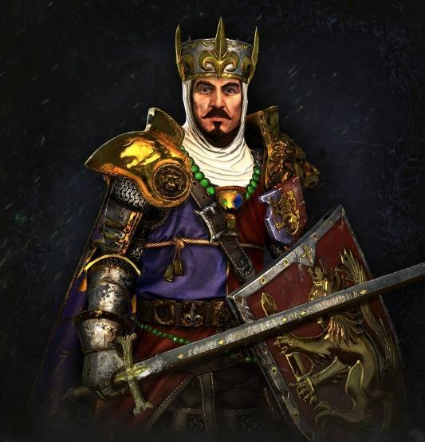
No one truly knows the identity of the knight now called Mallobaude. Some claimed he was a commoner unwisely raised to knighthood after saving the Duke of Lyonesse on a hunting expedition. Others said he was a Knight Errant who rode into the Border Princes and returned as his company's sole survivor. In the end, he proved to be the bastard son of King Louen Leoncoeur himself.
Whatever his origins, Mallobaude had once been a dashing and heroic knight, one of the finest young lances in Bretonnia. He was a magnificent warrior, and a man whose honour and principles seemed bound in iron. As a Knight Errant he earned his spurs and became a Knight of the Realm, but his devotion to the Knightly Code was so great that he immediately laid aside his lance and rode out as a Questing Knight, seeking the Lady's blessing and a revelation from the Grail about the purpose his life should serve.
Mallobaude crossed the whole of Bretonnia, devoting himself body and soul to the life of denial and hardship demanded of a Questing Knight. He appeared content to let admiring stories of his deeds circulate among the nobles of Mousillon. It was said that he crossed the Massif Orcal and cleared whole valleys of Greenskins, fought bat-winged Harpies in the Grey Mountains, and halted the advance of an entire Goblin tribe at Axe Bite Pass. Other tales placed him rooting out a Chaos cult among the foreign merchants of L'Anguille or hunting the monstrous Blue Hag of the Forest of Châlons.
One of the most persistent stories tells how, after long years seeking the Grail, Mallobaude grew weary of his hardships and stopped at a Grail Chapel. The Grail Damsel welcomed him, but Mallobaude was grim-faced and angry.
Why had the Lady forgotten him? Had he not done enough for her? Had he not slain the monsters of Bretonnia, aided the innocent, and punished the wicked? Yet he had seen no sign of the Grail and received no message from the Lady. He railed against devoting his life to the Quest and gaining nothing in return.
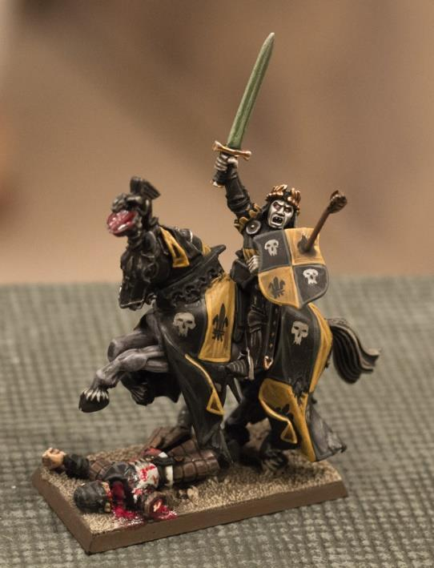
The Grail Damsel had counselled many Questing Knights, and she gave him the answer she had given them. The Quest for the Grail, she told Mallobaude, was not a journey undertaken to earn the Lady's recognition, nor a trial that won the right to drink from the sacred cup. The true quest was to reach this point of despair and continue in spite of it.
That was the true test of a knight: not the strength of his sword arm, but the strength of his soul. It was not a question of whether he could slay every monster in a forest, but whether, knowing that his lips might never touch the Grail, he would continue the Quest all the same.
Mallobaude considered her words. If they were true, all that remained was to press on, to pit himself against the most terrible dangers and face them with passion and courage until at last the Lady came to him as promised. At dawn, Mallobaude rode out from the Grail Chapel and did not rest until he reached the very place where his despair would be tested: the Land of Despair itself, Mousillon.
Mallobaude found misery enough in Mousillon. It was almost certainly he who rode against a host of Undead gathered near the Orphan Hills, and who entered the caves beneath ruined Pont'Resolu to put the malevolent Rat-men to the sword. No one can say what other adventures he endured in the Lost Duchy.
The only certainty, according to Mallobaude himself, is that he eventually came to rest at the edge of the Forest of Arden. He had been hunting Beastmen and other monsters, but instead discovered a foul, brackish stream. As he watched, its grey-green cast and clouds of flies fell away, revealing a magnificent clear lake wreathed in cold mist. A hand rose from the water bearing a radiant golden chalice, and Mallobaude knew that he had finally found the Grail.
To drink from the Grail could have only two outcomes. If the slightest stain of sin remained in his heart, its magic would kill him instantly. If he was pure, as a true knight should be, he would receive the Lady's blessing, never know fear again, and return to civilisation as a hallowed Grail Knight.
Mallobaude took the Grail, certain that his years of questing had cleansed him of every taint. He drank its waters and was not struck dead. He believed he had passed the test and received the Lady's blessing. Then he saw the truth.
Mallobaude did not die, but neither did he become a Grail Knight.
Instead, he received a revelation concerning the Lady of the Lake, the Knightly Code, and the very heart of Bretonnian chivalry. Somehow, rather than becoming a Grail Knight, Mallobaude had pierced the Lady's magic and discovered her true nature. Or perhaps madness had taken him, and his exposure to the misery of Mousillon had produced a fevered hallucination. Whatever the cause, Mallobaude believed what he saw to be the truth, and it was terrible.
Only his closest fellow conspirators knew what Mallobaude had seen when he drank from the Grail. It was horrifying enough that he rejected everything knightly and cursed even the Lady's name. Overcome with grief, he returned to Mousillon with his hopes in ruins, seeking only death in the Land of Despair. He did not find it. His sorrow became anger, and his anger hardened into hatred.
He had been lied to from birth, and worse, he had lived that lie. Yet he could still set matters right. By overthrowing the crown and abolishing the worship of the Lady of the Lake, he could undo the wrong inflicted upon Bretonnia. First, however, he needed an army and a dukedom of his own. Only then could he make a claim upon the throne. It was a plan of lunatic ambition, one that would make Mallobaude the first man to usurp the throne of Bretonnia. The dedication that had sustained his Grail Quest through despair was now turned towards a crusade against the Lady and the crown.
Mallobaude revealed his terrible vision to several nobles of Mousillon, and many joined him. Some shared his outrage at the lies imposed upon Bretonnia. Others were merely bitter and wicked men seeking revenge upon a realm that had made them outcasts. These nobles committed their resources to Mallobaude's first objective: claiming the title of Duke of Mousillon. Their forces would be needed both to repel any attack by the King and to retake the Ducal Palace by force.
The expedition succeeded, and Mallobaude walked as master through the halls where Maldred and Malfleur had met their doom.
Mallobaude's plan depended upon forging an alliance of often wicked and treacherous men and women through the force of his personality alone. Fortunately, his charisma and powers of persuasion rivalled those of any true Grail Knight. The “truth” he preached about Bretonnia was outlandish and difficult to believe, but he delivered it with such conviction that many who heard him accepted it completely.
He was gracious and generous to his allies, and even offered enemy nobles a single opportunity to join him. For many years, Mallobaude remained an exceptionally honour-bound knight. He had never ordered the execution of a fellow noble; instead, he allowed them to defend their lives in single combat. This was hardly a fair chance, for Mallobaude was among the most gifted warriors ever raised by Bretonnian chivalry, but the thought of slaughtering a noble like an animal remained abhorrent to him.
At his core, however, Mallobaude was utterly ruthless. He extended none of this comparative mercy to peasants or foreigners. Countless commoners, mercenaries, and foreign adventurers were executed at his command, or suffered worse fates. His belief in his cause was so absolute that he would send brave men, even nobles, to certain death if it advanced his purpose.
Though still bound by his personal conception of honour, Mallobaude had abandoned the Knightly Code entirely. Having rejected the Lady's grace and the King's authority, he felt no shame in such unchivalrous practices as employing mercenaries or blackpowder war machines.
More sinister still, devotion to his cause had eclipsed Mallobaude's sense of right and wrong. The walking dead were said to answer his call, and if the King invaded Mousillon, the living would march beside the dead in Mallobaude's army. Some nobles with whom he dealt bore the darkest reputations: Necromancers, witches, and even Vampires. Mallobaude courted them all, asking only whether they could help him achieve his purpose.
Mallobaude was rarely seen in Mousillon and appeared to possess no single base of operations. Instead, he attended the courts of the nobles who supported him, helping them recruit and deploy their forces while, it was whispered, ensuring their loyalty. He wore black plate armour from head to foot, earning the name Black Knight, and never raised his visor except among his fellow noble conspirators.
He was said to be handsome but intense, as ageless and inscrutable as a true Grail Knight. His deep, resonant voice could persuade a man to commit the most terrible acts. Mallobaude's heraldry was a golden serpent upon a field of black, displayed proudly on his shield and barding and upon those of the elite knights who formed his personal retinue.
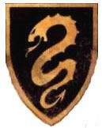
The campaign is designed for two players, one commanding the Loyalists and the other the Rebels. A few specific scenarios require a third player, while several battles feature alliances that allow more than two players to fight on each side.
To play the complete campaign, follow the stages in order as the war develops. A shorter version is also available if time is limited, omitting some stages. The sequence is only a guide to your own campaign, so feel free to alter it with the agreement of everyone taking part.
Note: from this page onward, an asterisk (*) identifies material found in the Rules Booklet for the game system you are using. Some referenced rules may not be reproduced in that booklet, in which case consult the appropriate official publication.
11Then came the Year of Woe, when Daemons ravaged every corner of the kingdom. Tzeentch had sent Kairos Fateweaver to steal the twelve enchanted artefacts once borne by the Companions of Gilles le Breton. The mission was so important that Tzeentch granted his servant a great part of his legions. With each recovered artefact, Fateweaver's Daemons grew more powerful.
In the first battles, the Bretonnians banished many Daemons. Once Kairos had gathered eight of the twelve relics, however, only the mightiest Bretonnian Dukes could field an army capable of threatening his host. By the opening of the incursion's twelfth month, the Lord of Change lacked only a single artefact. King Louen alone still dared face him, despite having lost more battles against Fateweaver's host than he had won.
The last battle of the Year of Woe was the Siege of Mousillon, for the final relic was kept there. Mallobaude's rebellion was about to begin when Daemons attacked his castle. At the height of the assault, the Bretonnian army launched a desperate sortie just as help arrived from an unexpected quarter.
Nurgle had long been fond of Mousillon, the birthplace of many of his diseases. He refused to see the city destroyed by Tzeentch's servants and sent his own legions to intervene. Mallobaude's men knew nothing of this. They saw only Daemons tearing one another apart and gave no quarter to either side.
Ku'gath Plaguefather struck down Kairos Fateweaver, only to be impaled moments later by a dozen blessed lances. With both leaders destroyed, the Daemonic armies vanished - perhaps to continue their struggle in the Realm of Chaos - and abandoned the relics behind them. Mallobaude stood victorious and could now display those holy treasures to legitimise his seizure of power.
Text adapted from Warhammer: Nagash and Warhammer Armies: Daemons of Chaos, 8th Edition.
In truth, Mallobaude was only a puppet. Arkhan the Black had spent centuries planning an assault upon La Maisontaal to recover a powerful artefact belonging to Nagash, and to accomplish it he needed to plunge Bretonnia into fire and blood. Having once corrupted Maldred, he now used Mallobaude and his thirst for revenge. The Liche remained carefully hidden behind the Black Knight so that his true designs would not be discovered.
The Daemonic invasion of Bretonnia nearly ruined Arkhan's plans. Although the servants of Chaos ravaged several regions in their wake, their attacks forced Mallobaude, and therefore Arkhan, to delay the uprising by almost a year. Arkhan believed that the Ruinous Powers sensed Nagash's return and were attempting to frustrate every act that might hasten it. The Liche nevertheless preserved his forces, and in 1543 by the Bretonnian Calendar he allowed Mallobaude to begin his revolt.
At the year's twilight, Mallobaude unleashed his army to seize the throne. Corrupted knights across the kingdom rallied to his banner while King Louen gathered his scattered armies. Minor clashes broke out along the borders of their territories, culminating in the disastrous Battle of Châlons.
Text adapted from Warhammer: Nagash.
From this point onward, the Rebel player may use either a standard Bretonnian army, representing the host of a renegade Duke, or a Bretonnian Rebels* army representing Mallobaude's more heterogeneous forces.
If Mallobaude the Black Knight* is used, the Bretonnian Rebels army is recommended, though not required.
At this stage, the Loyalist and Rebel sides both count as Bretonnian armies. The Civil War* rules for Bretonnia therefore apply whenever they face one another.
Both sides use Victor's Rewards* marked (Bretonnia) or (Common), but may not select rewards marked (Mousillon).
At the beginning of the Revolt, few Dukes are openly in rebellion, but some have already contacted Mallobaude and stand ready to join the Serpent. The Rebel and Loyalist Dukes are listed below. Their game rules appear in the Rules supplement.
French edition note: Beginning with the 1996 army book, several originally French Dukedom names were altered in French localisation: Artois became Artenois, Aquitaine became Aquitanie, and Carcassonne became Gasconnie. The original names returned in the French edition of The End Times: Nagash, and the supplement follows those restored forms.
In several scenarios, Mallobaude may attempt to corrupt a Duke. Apply the following rules:
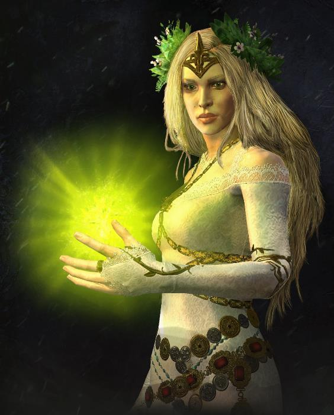
Ignoring Louen Leoncoeur's decree that every army in Bretonnia unite against the threat from Mousillon, Duke Armand of Aquitaine rode out to face Mallobaude. Even with Morgiana the Fay Enchantress at his side, Armand would have been soundly defeated had Drycha not led a host of forest spirits from the Forest of Châlons to his aid.
Yet the forest creatures had no interest in Armand's victory. They withdrew in the midst of the battle, carrying the Fay Enchantress away with them and condemning the Duke to defeat at Mallobaude's hands.
No trace of the Fay was found. Many Grail Knights and Questing Knights rode out in search of her, but none succeeded. Only much later was it discovered that Drycha had abducted Morgiana and delivered her to the Vampire Mannfred von Carstein, even as he prepared another conspiracy.
In truth, the Briarmaven of Woe had acted under the influence of Be'lakor, the First-Damned. He sought to hasten Nagash's return, believing the Great Necromancer alone capable of thwarting his rival Archaon. Morgiana's tragic fate reached its conclusion two years later, when Arkhan and Mannfred completed a dreadful ritual that required her blood.
Text adapted from Warhammer Armies: Wood Elves, 8th Edition, and amended by Thindaraïel.
After the Battle of Châlons, the Dukes of Carcassonne, Lyonesse, and Artois declared for Mallobaude, and the rebellion descended into civil war. At first, the King's lances held the advantage. Mallobaude's forces fought with all the fury of traitors, but the Lady's blessing protected those who rode beside King Louen.
Leoncoeur faced the renegade Dukes one after another. The Duke of Artois came first, for his lands lay closest to Couronne. The King's spies had long warned him that something was stirring in the Forest of Artois, where Chilfroy concealed men and mounts for some dark design, and Louen had prepared accordingly. Once the Duke's treachery was exposed, the King marched to battle. At his signal, spies sabotaged Chilfroy's vile war machines, stripping the traitors of their dishonourable advantage, and the Loyalist lances crushed the rebellion.
Louen then led his army into Lyonesse. It was a terrible waste: Adalhard's knights were broken by those of Couronne and the loyal Dukedoms. Mallobaude's lies had deceived Adalhard, but he understood too late. He met Louen amid the mêlée and the King's lance pierced his lung. As Adalhard lay dying, Louen bent over his former friend and wept. The Duke acknowledged his error and expired asking the Lady's forgiveness. Louen granted him a funeral worthy of a Grail Knight, though Adalhard had never belonged to the Lady's most sacred defenders.
Huebald of Carcassonne faced not the King but his neighbour Tancred II of Quenelles, sent by his sovereign to dispense royal justice. Their duel was long, and the two men exchanged as many bitter words as sword blows. One remark caused Huebald to doubt his cause for a single instant. In that instant, Tancred's blade passed through his body.
Thus the rebellious Dukedoms returned to the King's fold. After a year of campaigning, it seemed the Serpent's hour had passed.
Text adapted from Warhammer: Nagash and expanded by Thindaraïel.
But the Serpent had not spoken his last. He ordered his vassals to counterattack, and soon the entire country sank into civil war as Mallobaude's allies turned upon their neighbours. His purpose was not merely to conquer territory by overthrowing Dukes loyal to Louen, but to spread enough disorder to divide the King's forces.
Text by Thindaraïel.
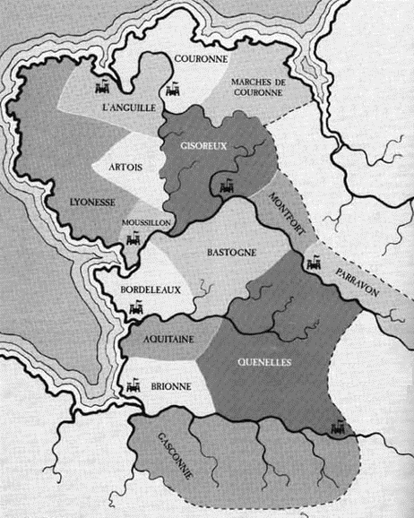
From this stage onward, Mallobaude may reveal his true nature as described in The Revelation.
Then Mallobaude's treachery was laid bare. He had made a pact with Arkhan, and as his mortal allies fell, the dead filled his ranks. Mallobaude himself had become a Vampire, for Arkhan had arranged for him to receive the Blood Kiss.
The civil war wounded Bretonnia more deeply than Arkhan had dared hope and provided him with far more corpses than expected. Given time, the Liche might have conquered all Bretonnia for himself, but his loyalty to his master outweighed any personal ambition.
Heinrich Kemmler and the Wight King Krell aided Arkhan throughout the rebellion, reinforcing the renegade prince's army of brigands and traitors with legions of restless dead. Krell's loyalty was absolute, for he desired Nagash's resurrection as fervently as Arkhan. Kemmler was less dependable. The Lichemaster balked at serving any master, and Arkhan knew he would help only while it suited his own interests.
Over Arkhan's objections, Mallobaude summoned Kemmler from his refuge in the Grey Mountains, where he had withdrawn to lick his wounds after confronting a Dwarf Slayer at Reikguard Castle. Arkhan was nevertheless intrigued to learn that Kemmler had briefly allied with Mannfred von Carstein, who had begun collecting relics and captives for some secret purpose.
Text adapted from Warhammer: Nagash and the novel The Return of Nagash.
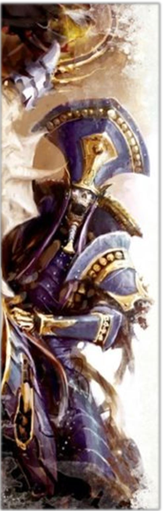
Not all of Bretonnia's Undead accepted Mallobaude's rule. The Red Duke of Aquitaine had plans of his own, and they did not include swearing allegiance to an usurper. He attempted to exploit the surrounding chaos, but Arkhan had little tolerance for such interference. The Liche reduced the Vampire noble's retinue to dust, permanently destroying the Dark Knight and the Banshee, his closest lieutenants. The Red Duke himself escaped and was not seen again until years later, in Sylvania, serving Nagash.
Text translated from Josh Reynolds's blog.
At any point after The Revelation, the Loyalist player may trigger the Red Duke's betrayal. This episode is an interlude and does not replace the current campaign stage.

From the beginning of the revolt, the Elves of Athel Loren had watched the armies of Louen Leoncoeur and Mallobaude the Serpent tear one another apart and lay waste to Bretonnia. The End Times foretold by Naieth were overtaking the world, yet a struggle for supremacy between two Human lords seemed insignificant in the greater scheme of things.
Eventually, Mallobaude gave the Elves reason to care. Wherever Mousillon's armies passed, living things withered and the Weave screamed in pain. Most of the land west of Quenelles was dying. Unless Mallobaude was stopped, Bretonnia would soon become a kingdom of undeath on Athel Loren's border.
Thus the Elves prepared for the most terrible of battles. Glade Guard and Wild Riders assembled by the thousand. Spellweavers crossed the clearings to awaken Dryads and Treemen. Dragons were roused from millennial sleep in the deepest chasms. Naestra, Arahan, Scarloc, Araloth, Sceolan, Skaw the Falconer - all the forest's greatest heroes took up arms.
Yet Ariel knew even this would not be enough. Only an alliance between Bretonnia and Athel Loren could still wrest victory from the darkness.
Text adapted from Warhammer Armies: Wood Elves, 8th Edition.
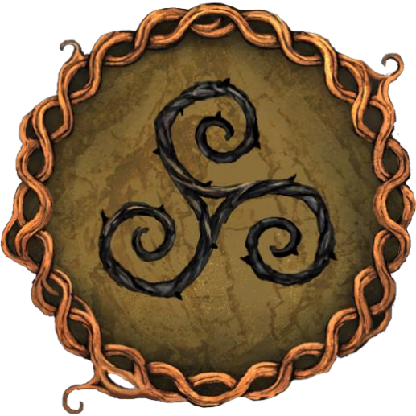
With the Fay Enchantress gone, the Lady of the Lake had no herald. Yet she remained the spirit of Bretonnia, and she called to the pure-hearted knights whom Mallobaude had driven from their fiefs. Some heard her in songs carried upon the breeze, others in voices echoing through waterfalls, and all rode to Quenelles.
There they found the King's army drawn up beside Orion's host. To the west advanced Mallobaude's army, its ranks outnumbering those of the King. The Serpent himself rode at its head amid the Knights of the Black Grail.
As darkness spread, Human and Elf drew sword. Prayers rose to the Lady of the Lake, to Isha, and to the ancestors of the forest. Then a single arrow flew towards Mallobaude's black heart. Thus began the last Battle of Quenelles.
At the battle's height, Serpent met Lion in single combat. Arkhan had promised Mallobaude that no mortal son of Bretonnia could defeat him, and the renegade prince had seen those words proven time and again. This duel was no exception. Mallobaude the Bastard cast the broken body of his father Louen into the mud. With their King lost, the Bretonnians' will deserted them. They fled, leaving the Wood Elves to save themselves as best they could.
Even as the battle ended and the Elves withdrew towards the shelter of the woods, Queen Ariel cried out and collapsed at the forest's edge, struck down by a mysterious affliction. Only Lileath and Ariel would ever know its cause, and as Ariel succumbed, Lileath told no one. The secret remained intact.
The Elves bore their unconscious Queen away. Orion forgot his enemies and rushed to his beloved's side. With the Asrai's sudden withdrawal, the remnants of the royal army fell into total rout.
Text adapted from Warhammer Armies: Wood Elves, 8th Edition, and Warhammer: Nagash.
No one knew what had become of King Louen. Some claimed seven sisters had borne him from the battlefield to Silverspire, there to be healed by the Lady. Others said the King had succumbed to his wounds and lay buried on the hillside above the city for which he had fought. The darkest rumours held that Leoncoeur wandered the southern Dukedoms as a puppet of the Necromancers allied with Mallobaude.
Whatever the truth, the King's absence dealt Bretonnia a terrible blow. All unity vanished. Each Duke hesitated to aid another province while his own lands were under assault. One by one the southern Dukedoms fell, and Mallobaude led his army north towards Couronne.
With victory seemingly close, Mallobaude grew impatient. Confidence in his invincibility made him reckless. At Gisoreux, Adelaix, Montfort, and a hundred other places, he challenged every knight willing to face him in single combat and emerged without a scratch each time.
Text adapted from Warhammer: Nagash.

In truth, Arkhan cared nothing for Bretonnia's fate. For centuries the Liche had planned an assault upon La Maisontaal to recover a powerful artefact belonging to Nagash, and to accomplish it he needed to put Bretonnia to fire and sword. Having corrupted Maldred, he now used Mallobaude and his thirst for revenge. As the Serpent's army advanced towards Couronne, Arkhan persuaded the Vampire prince to detour to La Maisontaal Abbey.
This was not the first time La Maisontaal had been threatened. Following the last great attack thirty years earlier, Tancred I had fortified the abbey and transformed it into an impregnable fortress.
Barracks housed several hundred archers and men-at-arms drawn from all fourteen Dukedoms. The peasants had little desire to die defending La Maisontaal, but their noble commanders regarded the posting as a great honour. Most determined among them was Duke Theodoric of Brionne, who had come to perform penance for unchivalrous conduct. Under his command, the garrison resumed its training and established patrols and observation posts throughout the surrounding country.
These precautions had spared La Maisontaal from the destruction that engulfed the lands south of the Grismerie. Ironically, the first clashes of the civil war had been desperately indecisive. Had Theodoric's garrison joined the King's army, the rebellion might have been strangled at birth. Yet Theodoric pursued absolution with such zeal that he became deaf to every other duty, stubbornly guarding La Maisontaal while his ancestral lands were plundered.
Now it seemed his determination might save the abbey. His fervour was beyond question, and he saw in the coming battle a chance to redeem both his heart and his carnal appetites. Theodoric ordered the garrison to form a battle line in the pastures south of the abbey. He told his soldiers they would rekindle Bretonnia's hope by winning a glorious victory for the Lady.
The Twelfth Battle of La Maisontaal was about to begin.
Text adapted from Warhammer: Nagash.
No sooner had the abbey's defences been destroyed than Arkhan noticed Kemmler's absence. The Lichemaster had betrayed him. Arkhan hurried into the abbey, following a trail of scorched corpses to the crypts. Sorcery had shattered their protective seals, and half-melted letters of gold lay upon the floor among the bloodied bodies of the knights who had guarded the doors.
Kemmler turned as Arkhan entered. The Necromancer's clawed fingers gripped Alakanash, the Great Staff of Nagash, and a triumphant grin split his face. For decades, he said, he had travelled at Nagash's whim as the Monarch of the Dead guided his thoughts. When Kemmler finally made his pact with the Chaos Gods, they not only restored all his lost knowledge but revealed how Nagash had manipulated him.
He now laboured for the glory of Chaos, not to restore a legend from a bygone age. Nagash had promised power and never granted it; the Chaos Gods were power itself, and they shared it with those willing to serve.
Heinrich raised Alakanash and spoke words in a forbidden tongue. Black fire ran along the staff as the Lichemaster channelled the Winds of Magic. Arkhan tightened his grip upon his own staff and reanimated the bodies strewn across the crypt floor.
It was time to discover whether Kemmler deserved his reputation.
Text adapted from Warhammer: Nagash.
Mallobaude had emerged from every duel with the champions of the other Dukedoms without so much as a scratch. In his arrogance, however, he forgot that not all Bretonnia's champions were entirely mortal.
When the illegitimate prince's army reached Couronne, the last Dukes of Bretonnia stood united against him, their banners flying side by side. Mallobaude cared nothing for their defiance, for his host vastly outnumbered theirs, and he rode forward to challenge them.
This time, no ordinary Baron or Duke took up the gauntlet. His challenge was answered by Sacremor, the legendary Green Knight, returned from the Lacrimora to aid his people. Mallobaude understood his mistake, but before he could flee, the Green Knight surged forward and struck the traitor's head from his shoulders.
With its master slain, Mallobaude's army was swiftly routed, though Arkhan had long since disappeared. Mallobaude's body was burned after the battle and his ashes scattered to the winds.
Text adapted from Warhammer: Nagash.
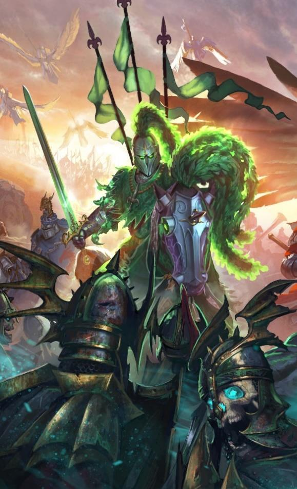
Though defeated at Quenelles, Mallobaude survived and withdrew towards his fief of Mousillon. The city's depths sheltered every manner of creature of the night, drawn across centuries by the malice and corruption of its Dukes. Mallobaude intended to unleash these horrors upon his enemies.
Defeat had also wounded his army. Some Dukes he had persuaded to support his seizure of power now doubted its success, and every day brought fresh desertions from the Serpent's host.
Mallobaude hurried towards Mousillon with Louen in pursuit. Furious with his bastard and emboldened by victory, the King meant to end the war. When the Elves withdrew, Louen had lost precious time attempting to preserve their alliance. They answered that the fate of their stricken Queen mattered above all else, for Ariel was the very essence of life. Louen cursed their cowardice, reorganised his badly depleted army, and began the chase.
Several Dukedoms ruled by Mallobaude's lackeys lay across his path. Louen vowed to set them right.
Text by Thindaraïel.
Mallobaude's allies are beginning to desert. Apply both rules in every remaining battle.
Honour Regained: Before deployment, roll a D6 for each Bretonnian unit in the Mousillon Army. On a 6, it passes to the Loyalist player's control. If the corresponding Duke is dead or captured, it changes sides on a 5+ instead. Units from Mousillon itself are unaffected.
The Tide Turns: After deployment, roll a D6 for each Necromancer in the army. On a 6, that Necromancer sees which way the wind is blowing and deserts. Remove the model as a casualty. Arkhan and Heinrich Kemmler are unaffected.
Mallobaude reached his castle and made pacts with the creatures lurking beneath it. Blaming his defeats upon the weakness of men, he fed most of the peasants who still followed him to the Ghouls. He executed the nobles and knights, then reanimated them, creating an army of perfectly obedient dead. Finally, he hurriedly fortified the castle and prepared to withstand a siege for years.
But Louen already understood the nature of his enemies, warned by a handful of peasants fortunate enough to escape the massacre. After a brief bombardment, the King ordered a massed assault. There was little value in bombarding Zombies and animated Skeletons when Necromancers could simply raise them again. As soon as the main defences were damaged, Louen mounted his Hippogryph and led the charge.
Text by Thindaraïel.
From this point, the Mousillon Army may no longer be used. The Rebel player uses the Vampire Counts army list.
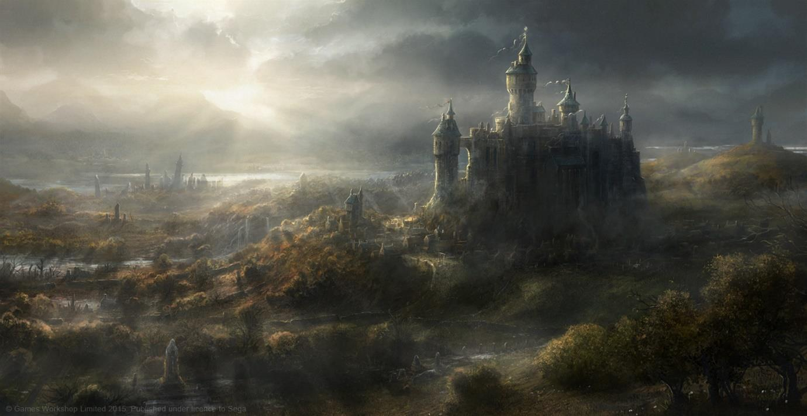
No sooner had victory been wrested from disaster than the Dukes turned to the succession. Convinced that Louen Leoncoeur was dead and faced with an empty throne, each sought the crown for himself. Civil war nearly began anew.
It surely would have, had the Green Knight not intervened and revealed himself as Gilles le Breton, founder of the kingdom, restored to life by the Lady so that he might lead his people once more. The astonished Dukes immediately yielded the throne, and the people of Bretonnia at last had cause to rejoice.
So it seemed. The prophecy of Gilles's return promised that he would come to guide his people in their darkest hour. Swept up in celebration, the Bretonnians assumed those words referred to the civil war just ended. They were gravely mistaken.
Within days of Gilles's second coronation, plague erupted across the southern Dukedoms and devastated what remained of Quenelles and Carcassonne. Blazing warpstone meteors then fell upon the ravaged land, bringing death and mutation. With every passing day the power of Chaos grew and Bretonnia's plight worsened.
A quarter of the population had died to Daemonic flame, disease, or civil strife. As many again had fled across the mountains into the Empire or Tilea. Though they acclaimed Gilles's return, the Bretonnians suffered. The peasants were more wretched than ever, while the nobility looked across lands once counted the fairest in the Old World and lamented the fate that had befallen them.
At Couronne, Gilles watched the sickness consume his realm. Knowing it heralded still darker times, Sacremor declared a crusade of unprecedented scale. It would be led by Louen, returned from Silverspire where the Lady had healed him and transformed him into her High Paladin.
Text adapted from Warhammer: Nagash.
When the throne-room doors opened, no one expected the man framed within them. The astonished guards had allowed him to pass from his landing upon the Flight Tower to his entrance into the Great Hall, uncertain whether they should attempt to stop him. He had spoken no word. A glance had frozen the few guards who failed to recognise him and moved to intercept, and he had crossed the castle alone without alarm or warning reaching those ahead.
Noble ladies and valiant knights who recognised him stared open-mouthed. Those who doubted their eyes whispered to their neighbours for assurance that they were not dreaming. The murmur swelled as the armoured figure crossed the hall, still silent, walking with the assurance of a man who knew his right and had come to claim what was owed.
A few paces from the throne he stopped, and King Gilles slowly rose to face him. For a moment the two men regarded one another while the court held its breath, unable to tell whether a confrontation was about to begin.
Then the King spoke a single word.
“Louen,” he said softly.
The holy knight immediately knelt, bowing his head but answering in a voice that carried throughout the hall.
“Your Majesty.”
Gilles descended the three steps beneath the throne and approached his predecessor with open arms. “Louen, my brother, be welcome and rise. We feared you lost forever.” He embraced him, and somewhere in the stunned court a lady audibly remembered to breathe.
The old knight explained. “The Lady saved my broken body. I have returned from Silverspire, where the sacred waters restored my strength. She also told me of your deeds: how you slew my accursed offspring and took up the crown.”
Gilles nodded. “That was the task the Lady herself gave me: restore order in Bretonnia and reclaim the throne against the perils ahead. Your duty as King is ended, Louen.” A murmur crossed the hall as the meaning of those words became clear. Gilles continued. “Now that you are released from that burden, may I ask your aid against the Lady's enemies?”
The question permitted only one answer, and the former sovereign gave it gladly. “Of course, Your Majesty. My arm is at your service, filled with all the holy wrath the Lady has chosen to grant it in our hour of peril.”
Then Gilles proclaimed, for Louen and for every witness, Bretonnia's most celebrated declaration of war since King Jules ordered the crusades against the Greenskins:
“I, Gilles of Bastonne, Champion of the Lady of the Lake and King of Bretonnia, command Louen of Couronne, henceforth High Paladin of the Lady, to gather a crusade of every valiant knight the sacred land of Bretonnia can muster. Carry death to the Lady's hated enemies, wherever they may be found within her lands or beyond them. The sons of Bretonnia are the bravest in this world. They shall not wait meekly while all crumbles around them. The land shall be purged, the creatures of Chaos slaughtered and driven back to the sea. Bretonnia shall survive once more - for honour, for the King, and for the Lady of the Lake! Louen, do you swear to fight and die for the Lady?”
Drawing his sword, Gilles rested its point upon the brow of the kneeling Grail Knight. Louen forged the oath that would govern the rest of his life with a single answer: “Yes.”
The High Paladin rose as the King returned to his throne and council of war. He asked only one question.
“My King, where shall I carry the Lady's wrath?”
Gilles answered, “The Lady warned me in a dream. Chaos will strike the Empire. You must reach Altdorf.”
Text by Thindaraïel.
Louen methodically hunted down the remaining Necromancers, then settled the succession in every Dukedom. It seemed the nightmare was over and the people of Bretonnia could rebuild. Alas, it was not so.
Within days of Louen's return to Couronne, plague erupted across the southern Dukedoms and devastated what remained of Quenelles and Carcassonne. Blazing warpstone meteors then fell upon the ravaged land, bringing death and mutation. With every passing day the power of Chaos grew and Bretonnia's plight worsened.
A quarter of the population had died to Daemonic flame, disease, or civil strife. As many again had fled across the mountains into the Empire or Tilea. Though the people acclaimed Louen's restoration, they suffered. The peasants were more wretched than ever, while the nobility looked across lands once counted the fairest in the Old World and lamented the fate that had befallen them.
At Couronne, Louen watched the sickness consume his realm. Sensing it heralded still darker times, the King declared a crusade of unprecedented scale, led by Sacremor himself and sent to aid the neighbouring Empire, the only bulwark against the hordes of Chaos descending from the north.
Text adapted from Warhammer: Nagash and revised by Thindaraïel.
At last rid of his rivals, Mallobaude seized the crown and became Bretonnia's first Vampire King. The Dukes still loyal to Louen were driven out or exterminated, and new Dukes drawn from Mallobaude's bloodline took their places.
Bretonnia became a kingdom of undeath, where the remaining living served in fear of execution and reanimation. At first the Asrai tried to prevent Mallobaude's dominion, but their struggle against the Beastmen left them unable to divide their forces. They withdrew into Athel Loren and sealed its borders.
When Nagash returned to the physical world in 2524 IC, he summoned Mallobaude to become one of his Mortarchs. The Vampire King politely refused, arguing that he could serve the Lord of Undeath better by continuing to govern Bretonnia, which absorbed part of the Chaos invasion. Mallobaude swore allegiance and promised reinforcements whenever his master required them.
Soon afterward he fulfilled that promise, mustering an armada of living and dead to join Harkon's fleet bound for the Land of the Dead. This army fought in Nagash's campaign to reclaim the throne of Khemri.
Thus was forged an alliance among the Dead, with the Empire caught between Sylvania and Bretonnia. Yet the kingdoms of undeath proved allies of circumstance rather than immediate enemies, and Bretonnia had little to fear from an Empire wholly occupied by the invasion of Chaos.
Text by Thindaraïel.
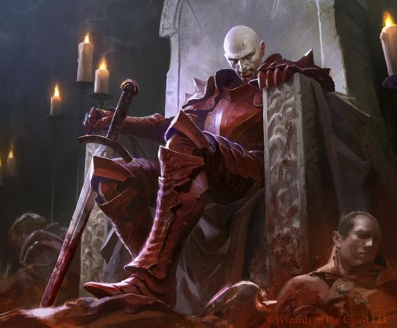
The last body slid lifelessly to the floor as Mallobaude released his grip. What little blood remained in its veins spread across the stone to mingle with that of the Vampire's other victims. Scarlet stains covered the throne room.
“Thank you, dear friend,” Mallobaude told his victim with cruel irony.
Lady Iselde of Vesperac did not answer. Horror and pain remained fixed upon her dead face. She had spent her entire life amid the sumptuous courts of Dukes and Kings, using influence and learning to climb Bretonnia's social order until she secured the coveted office of the King's Mnemonic Page, responsible for managing his appointments and recalling his obligations. The poor woman could scarcely have imagined ending her life drained by a parricidal Vampire usurper.
Mallobaude surveyed his work. Louen's court lay at his feet in a pool of blood. He could now install his own sycophants and savour the power he held over them. But first, one task remained.
He approached the throne, a magnificent construction of carved stone and wood, ornamented with gold and precious cloth. The arms of Couronne stood beside those of the King above the colours of the eleven other Dukedoms. Here his father Louen had ruled for so long.
Mallobaude took immense pleasure in settling upon the seat, feeling its comfort and imagining his future. He lifted the crown taken from his father's unconscious body at Quenelles and placed it upon his own brow.
At last, Mallobaude was King of Bretonnia.
“Arkhan!” he commanded.
A hooded figure emerged from the shadows.
“Your Majesty?” said the Liche, irony touching his voice.
Could Nagash's former vizier truly place upon equal footing the usurper of Khemri, who had discovered a new form of magic and forged his own legend, and this inept bastard who had needed to be pushed onto a throne?
“You have served me well, Liche, and you deserve a reward. What do you desire?”
Arkhan smiled inwardly. Centuries of labour in the shadows - from Maldred's corruption to this very day - had finally borne fruit.
“My thanks, Your Majesty. Only one thing interests me: an artefact upon your lands, which need only be ordered brought before you. It is an ancient staff hidden within the crypts of La Maisontaal Abbey.”
“You shall have it, my friend - with the Abbot's head upon a silver platter.”
Arkhan showed every one of his blackened teeth.
Text by Thindaraïel.
The peasantry's fate was quickly settled. Despite their new masters' brutality, they immediately submitted. During the years of Mallobaude's reign of terror there was neither revolt nor uprising, for the common people soon understood that the slightest resistance meant death - and worse thereafter. Vampires and Necromancers enjoyed pleasant years, drawing food and experimental subjects from the population as though selecting animals from a herd for slaughter.
Even among the knights, the basest and most cowardly joined Mallobaude. Many received the Blood Kiss; the weakest were simply massacred and raised as Black Knights. Bretonnia, homeland of cavalry, preserved its reputation through this hideous perversion of its celebrated warriors.
Knights loyal to the Lady and the ideals of chivalry resisted far more fiercely, and few escaped alive.
In the summer of 2524 IC, the former King Louen reappeared, his wounds healed by the Lady's enchantments. He could not gather enough knights to wage war and was forced to flee into the Empire. He intended to aid Karl Franz against Chaos, hoping the Imperials would one day repay that aid when the time came to reconquer his homeland.
The Crusaders of Despair, as Louen's army named itself, crossed numerous Undead-controlled Dukedoms, rallying every surviving hero they could find. They passed silently through the Grey Mountains and reached Altdorf while the forces of Chaos encircled the city. After the battle, the crusaders accepted that their nation no longer existed and, for a time, joined the Imperial army.
Text by Thindaraïel.
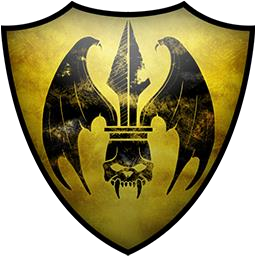
Dates are given first in the Bretonnian Calendar (BC), followed by the Imperial Calendar (IC).
Louen Leoncoeur is crowned King of Bretonnia. He immediately addresses the “Mousillon problem,” strengthening the Cordon Sanitaire and helping the Dukes of Lyonesse and Bordeleaux patrol their borders.
The Black Knight first appears. Mallobaude is reportedly seen at Aucassin's court.
The Year of Woe. Tzeentch's Daemons ravage Bretonnia. The King's armies are thrown into disorder and suffer repeated defeats.
Daemons attack Castle Mousillon but turn upon one another, leaving Mallobaude victorious. Mallobaude and Arkhan must delay their invasion for a year.
During a battle against Norscan raiders near L'Anguille, knights bearing a golden serpent on a black field abandon the fight without explanation. Many brave knights die to Norscan berserkers. The King musters his army, and many expect a holy war against Mousillon and the Black Knight.
After years of preparation, Mallobaude invades Bretonnia. His forces initially hold the advantage and rapidly seize territory.
The Battle of Châlons. Duke Armand ignores the King's orders and faces Mallobaude. Drycha's forest spirits arrive, then suddenly withdraw, leaving Aquitaine to be crushed. At Be'lakor's suggestion, Drycha abducts the Fay Enchantress and delivers her to Mannfred von Carstein. With the Fay gone, the Dukes of Artois, Lyonesse, and Carcassonne join Mallobaude. Louen defeats them one after another.
Mallobaude reveals his corruption: he is a Vampire leading an army swollen by the Undead. Refusing to tolerate an Undead empire on their border, the Asrai intervene. Ariel and Orion, Naestra and Arahan, Sceolan, Scarloc, and Araloth join the host against him.
The Battle of Quenelles. Louen's alliance with the Asrai meets Mallobaude outside Quenelles. Mallobaude defeats Louen and leaves him for dead. The Asrai return to Athel Loren carrying Ariel, struck down during the retreat. Without their King, the Dukes fail to unite and Mallobaude conquers almost all Bretonnia.
The Battle of Couronne. Mallobaude confronts the last Loyalist Dukes. Sacremor kills him with a single blow. The leaderless Rebel army is crushed and its Necromancers flee.
The Dukes quarrel over Louen's succession. Sacremor reveals himself as Gilles le Breton, reclaims the throne, and prevents another civil war. Gilles declares an Errantry War against the threats facing Bretonnia and the world.
Louen returns as the Lady's High Paladin and leads the crusade into the Empire.
Louen defeats Mallobaude at Quenelles and pursues him towards Mousillon. The Asrai return to Athel Loren with Ariel, struck down at the moment of victory.
The Siege of Mousillon. Louen assaults Mallobaude's fortress and the Vampire is slain.
Louen declares an Errantry War against the threats facing the world and Bretonnia.
Sacremor leads the crusade into the Empire.
The Battle of Couronne. Mallobaude defeats Sacremor, crushes the last Loyalists, and claims the throne.
The purge is complete and Mallobaude's rule secure. He battles the Daemons invading his realm.
Nagash is reborn and Mallobaude pledges his support. Louen returns and gathers his followers to join the Empire.
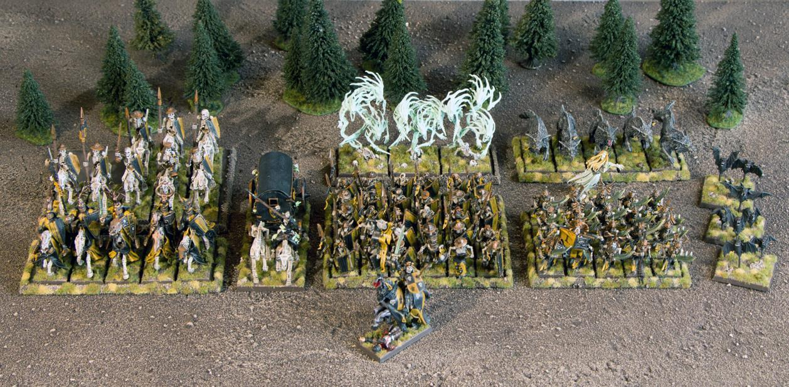
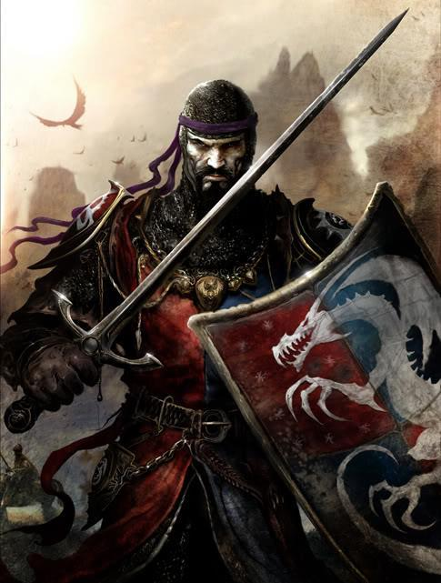
Mallobaude the Serpent, bastard son of Leoncoeur, takes up arms against his father. He knows the truth of the Grail and the Lady and claims he will overthrow their false religion. Civil war rages as the Dukes turn upon one another. Yet in the darkness, the Serpent's sinister allies pursue a still more terrible conspiracy, intended to return one of the world's most dreadful beings...
The Revolt of Mallobaude is a Warhammer campaign set during the prelude to the End Times. It can be played on its own, with several possible conclusions, or linked to other End Times campaigns to recreate - or reshape - the apocalyptic destruction of the Warhammer world.
Warhammer: The End Times - The Revolt of Mallobaude is an unofficial Warhammer supplement. Each volume explores one part of the World-that-Was's final campaign and presents its protagonists in detail.
An unofficial supplement for
The Game of Fantasy Battles
Not self-contained: a compatible Rules Booklet is required.